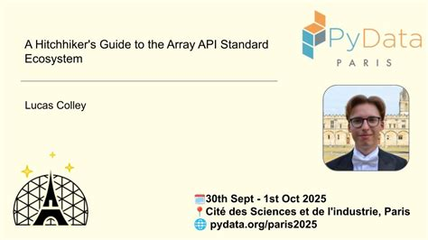
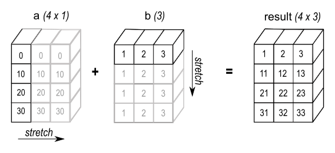
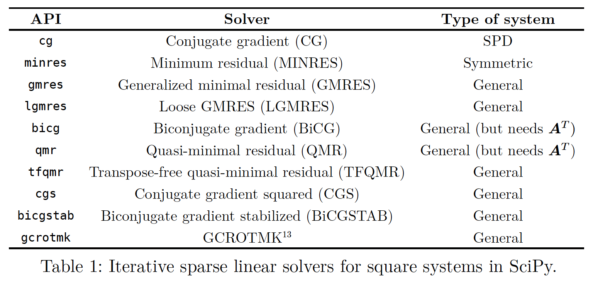
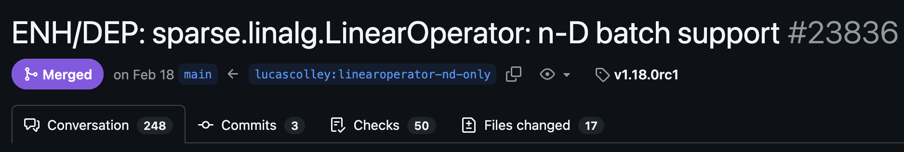
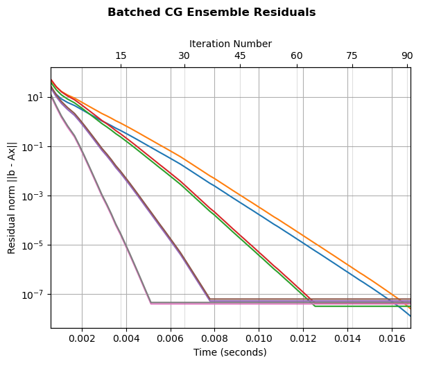
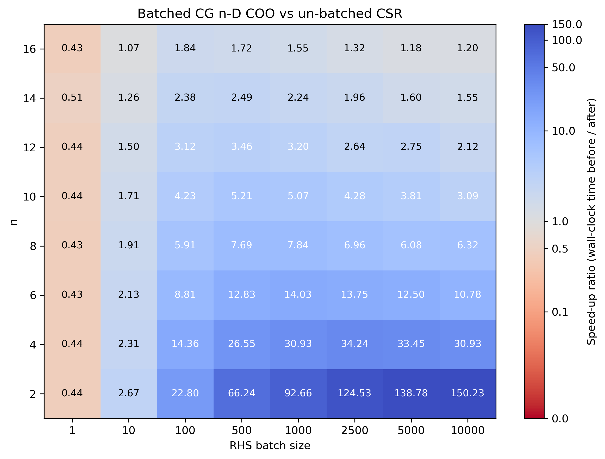
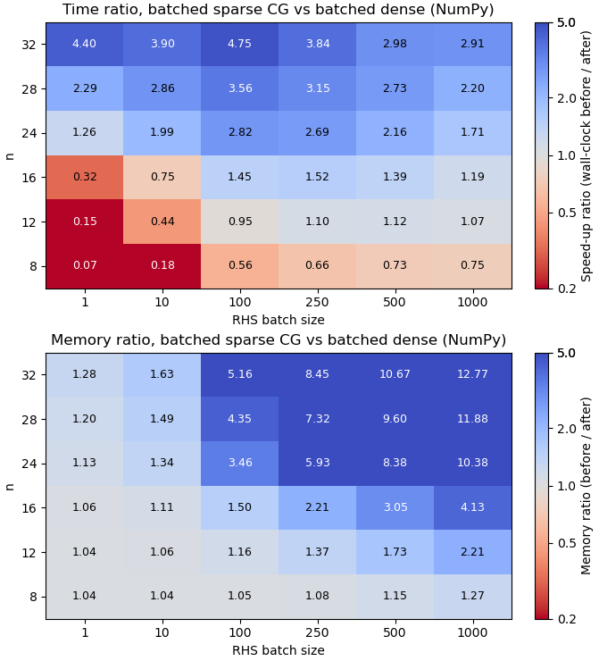

LinearOperator: stories from advancing an 18-year-old data structure in SciPy2026-07-20
Scan to view the slides
LinearOperator?scipy.sparse.linalg
jax.jit / torch.compile


LinearOperatorscipy.sparse.linalg.LinearOperator is the data structure used by these algorithmsLinearOperator?LinearOperatorscipy.sparse.linalg.LinearOperator
scipy.sparse.linalg.aslinearoperator can convert dense or sparse arrays to a LinearOperatormatvec callable, or via subclassingmatvec and matmat multiplication methods
ndim = 2xp arrays... indexing to allow arbitrary batch dimensions to pass through:pickle should continue to work on LinearOperator objects.np or self._xp) cannot be pickled, so we instead tell pickle how to represent the state with an array (self._xp.empty(0)), and recover self._xp:matvec promised to accept \(1\)-dimensional vectors not only in row-vector format (shape (n,)), but also in column-vector format (shape (n, 1))
matvec operates on (batches of) row vectorsDeprecationWarning for 2 minor releases (~1 year) before removal
pytest.mark.parametrize over dtypes, shapes etc.


LinearOperator: stories from advancing an 18-year-old data structure in SciPy - https://lucascolley.github.io/talks